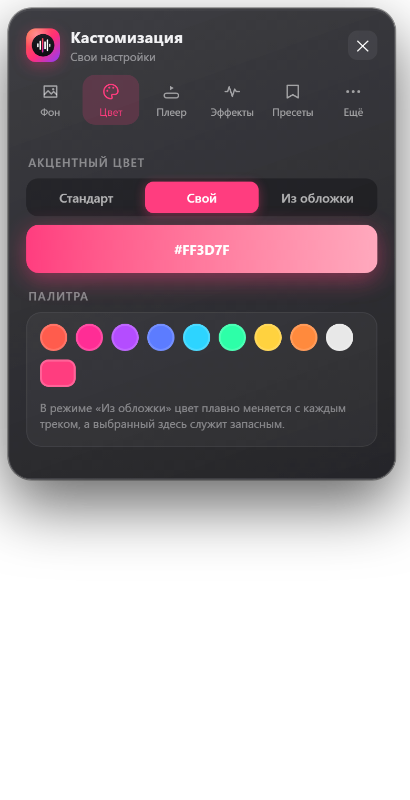
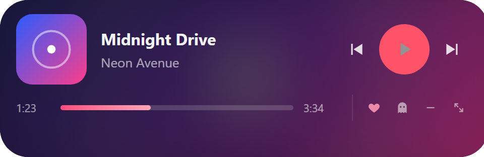
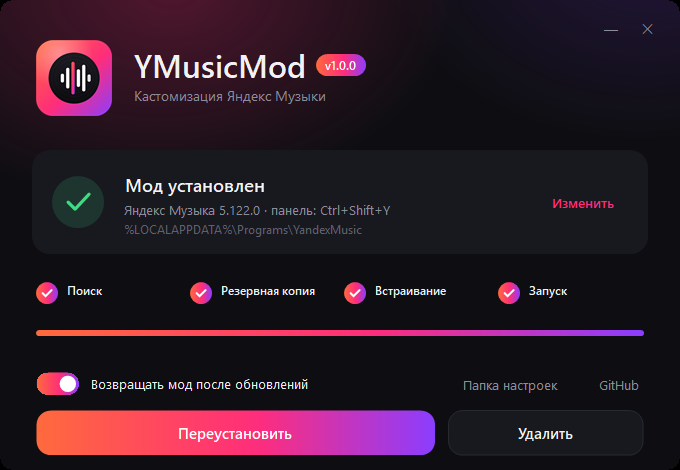

Свой фон и видео-обои, цвет из обложки, визуализатор, мини-плеер поверх игр и статус в Discord. Бесплатно и с открытым кодом.
Windows 10 и 11 · 260 КБ · установка в один клик


Всё настраивается в одной панели прямо в приложении. Открывается по Ctrl+Shift+Y.
Фото, GIF или видео. Слайдшоу, смена днём и ночью, размытие и затемнение.
Кнопки, прогресс и свечение плавно перекрашиваются под каждый трек.
Спектр над плеером, обложка и свечение пульсируют под бас.
Поверх всех окон, с перемоткой. Не мешает играм и прячется сам.
Статус «Слушает» с обложкой, временем трека и кнопкой на песню.
Яндекс Музыка обновилась, а мод через пару секунд снова на месте.
Пункт «Студийное» в настройках звука: lossless плюс тёплый бас, воздух, широкая сцена и мягкий лимитер. Ещё slowed, nightcore и 8D.
Больше сотни шрифтов с кириллицей, системные или свой файл. Свой логотип вместо яндексовского.
Треки и обложки подгружаются заранее в фоне, поэтому при прокрутке нет серых заглушек.
Файл YMusicMod-Setup.exe весит меньше мегабайта и ничего лишнего не ставит.
Установщик сам найдёт Яндекс Музыку и встроит мод. Если программа в другой папке, он спросит, где она.
Нажмите Ctrl+Shift+Y в Яндекс Музыке и выберите фон, цвет и эффекты.

Да, полностью. Код открыт на GitHub под лицензией MIT.
Мод меняет только файлы приложения на вашем компьютере и перед этим делает резервную копию. Логин, пароль и подписку он не трогает и никуда их не отправляет. Данные треков он запрашивает у того же сервера Яндекса, что и само приложение, а шрифты скачивает с Google Fonts, только если вы их выбрали. Статистика прослушиваний хранится только у вас.
Мод не влияет на подписку: он меняет только внешний вид и добавляет удобства. Музыка играет так же, как в обычном приложении.
Если оставить опцию «Возвращать мод после обновлений», мод вернётся сам через несколько секунд. Иначе просто запустите установщик ещё раз.
Файл не подписан платным сертификатом. Нажмите «Подробнее» → «Выполнить в любом случае». Исходный код открыт, его можно проверить или собрать самому.
Запустите установщик и нажмите «Удалить». Приложение вернётся к исходному виду.